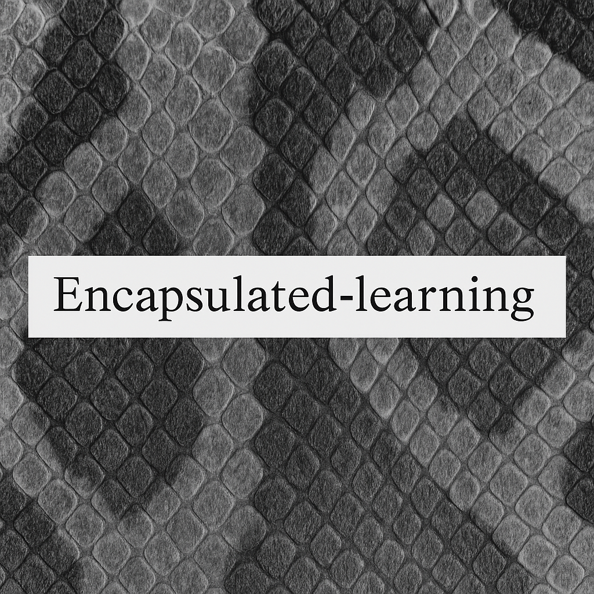

Welcome to Encapsulated Learning - a carefully structured study repo by Monika Tomanek designed to help you learn and apply modern Python techniques clearly and safely.
Everything here is beginner-friendly, example-rich, and designed to stick.
A full walkthrough of Object-Oriented Programming using a clean example. Includes inheritance, encapsulation, polymorphism, abstraction, and class vs static methods.
Learn how to securely manage API keys, DB passwords, and other sensitive config using .env files, python-dotenv, and os.getenv().
Includes example project files:
config.pydemo.py.env.examplePython Patterns for Data Analysis
A cheat-proof collection of essential data analysis patterns using pandas. Includes frequency counts, filters, loops, groupby, and formatted printing - all with mental sentences to help you remember.
This is not a textbook. It’s not a dump of copy-paste tricks either. It’s a living reference for Python learners who want:
Whether you're just starting out or reviewing core skills, this repo is here to make things click.